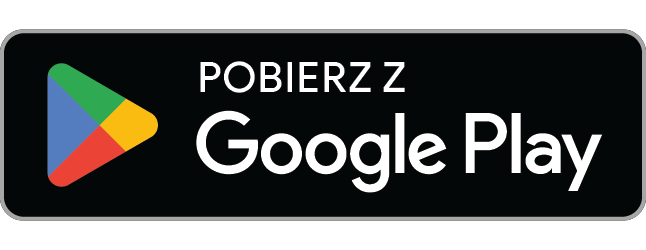
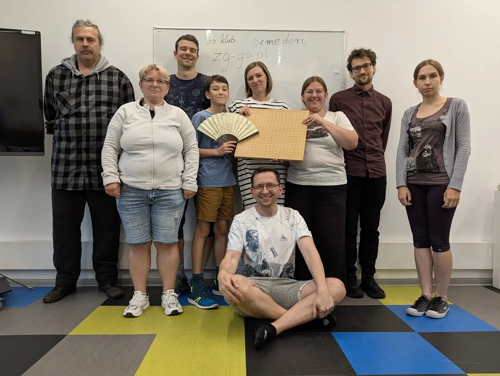

Gdzie i kiedy
Mediateka Góra Mediów ("Norwid"), 1 piętro
Zielona Góra, Google mapa
Dla kogo
Pierwszy raz w Go? Świetnie — nauczymy cię zasad w 15 minut i zagramy z tobą pierwszą partię. Często gramy na 9×9 i 13×13. Nie musisz nic ze sobą brać; gobany i kamienie mamy.
Grasz od dawna? Tym lepiej. Jest z kim pograć i pogadać.
Przychodzą nastolatki, studenci i dorośli. Dzieci mile widziane z opiekunem. Atmosfera luźna — można pograć w skupieniu i nie odzywać się przez godzinę, można też pogadać przy stoliku obok. Wejdź śmiało — ktoś z nas się odezwie i zaproponuje partię. Możesz zostać 20 minut, możesz dwie godziny.
Wstęp wolny, bez zapisów.
Między spotkaniami — Discord
Klub nie kończy się razem ze spotkaniem — reszta tygodnia dzieje się na Discordzie. Lecą tam zdjęcia ze spotkań, pozycje z partii, prośby o komentarz gier online i umawianie się na gry poza klubem.
Co jakiś czas wraca temat, jak sprawić, żeby w Zielonej Górze grało więcej ludzi — pokazać Go na Winobraniu, zanieść planszę do szkoły, przyprowadzić kogoś z pracy.
Czemu Go
Czarne kamienie, białe kamienie, plansza. Dwóch graczy stawia po kolei i próbuje otoczyć więcej terytorium niż przeciwnik. Reszta wynika sama — z kilku prostych zasad rośnie gra, w którą można grać całe życie i wciąż znajdować w niej coś nowego.
Najstarsza gra strategiczna świata — grana nieprzerwanie od ponad 2500 lat. Na planszy 19×19 jest więcej możliwych pozycji niż atomów we wszechświecie.
AlphaGo
To ta gra, w której AlphaGo pokonał mistrza świata w 2016. Historię tego meczu — i tego, jak rewolucja sztucznej inteligencji zaczęła się właśnie od Go — opowiada świetny dokument na YouTube (90 minut, za darmo). Bardzo go polecamy nawet osobom, które o Go nigdy nie słyszały — ogląda się fantastycznie. Jest po angielsku, ale polskie napisy włączysz w ustawieniach odtwarzacza: Napisy → Przetłumacz automatycznie → polski.
Hikaru no Go
A jeśli wolisz anime, zerknij na Hikaru no Go — wystarczą dwa pierwsze odcinki, żeby poczuć smak emocji.
Gdzie grać
- Go Quest — polecamy tę aplikację do gry na małych planszach, 9×9 i 13×13, czyli tych, od których zaczyna się u nas w klubie. Za darmo:


- online-go.com (OGS) — gra w przeglądarce, z ludźmi i z botami. Żeby osłuchać się z grą wcześniej, zaloguj się przez Google i zagraj z botem; na start polecamy planszę 9×9 z handicapem 5.
Gdzie się uczyć
- kursgo.pl — kurs gry w Go po polsku
- W klubie stoi półka z książkami o Go — można je wypożyczyć do domu.
Organizacje i rankingi
- go.art.pl — Polskie Stowarzyszenie Go
- europeangodatabase.eu — europejski ranking
Kontakt
E-mail: klub@zg-go.pl
Podobało ci się u nas? Zostaw opinię w Mapach Google — dzięki niej trafiają do nas ludzie, którzy inaczej by nas nie znaleźli.
Do zobaczenia, plansza czeka.
